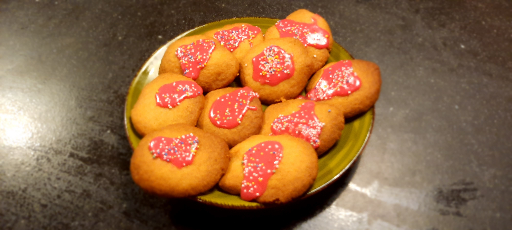
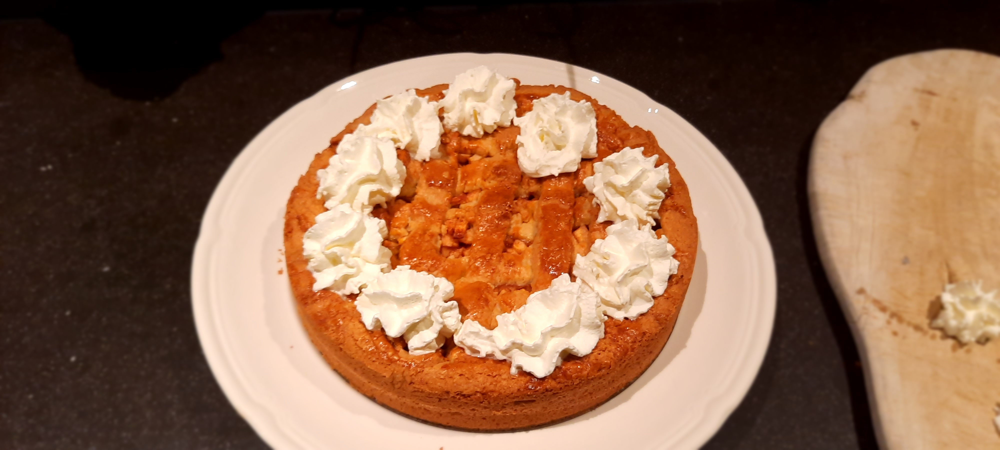

Dit is dé plek voor kinderen om (met elkaar of hun ouders) samen leuke en lekkere gerechten te bakken. Ook valt er hier veel te leren over bakken en in de keuken staan. Bijvoorbeeld hoe je een recept moet volgen en hoe je veilig kan bakken. Verder kun je ook lekker je creativiteit erop los laten! Dus waar wacht je op?

Klik hier voor cupcakes!
Klik hier voor koekjes!
Klik hier voor taarten!